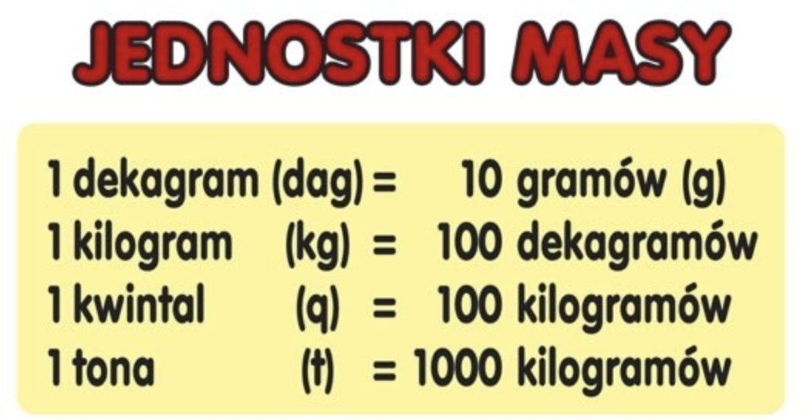

Matematyka > Wagi i miary > ⚖️ Waga >
Wagi i miary
⚖️ Waga
(Вес — poznaj jednostki i mierzenie)
📍 Co to jest waga?
- Waga to miara, która mówi nam, jak ciężki jest przedmiot.
- Wagę mierzymy za pomocą specjalnych narzędzi — wag lub wag elektronicznych.
✏️ Jednostki wagi
-
Единицы веса
- Najczęściej używamy gramów (g) i kilogramów (kg).
- 1 kilogram (kg) = 1000 gramów (g).

📐 Jak mierzymy wagę?
- Kładziemy przedmiot na wadze.
- Odczytujemy wynik, który mówi nam, ile kilogramów lub gramów waży przedmiot.
🧩 Przykłady
- Jabłko waży około 200 gramów.
- Plecak szkolny może ważyć około 3 kilogramów.
- Kawałek cukierka waży kilka gramów.